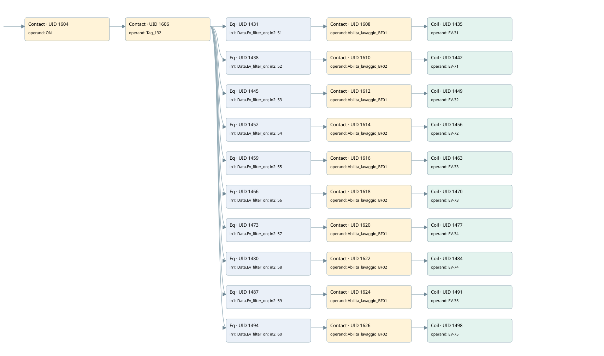

wash filter
filter · 검색 색인 순서 14 · 원본 내부 NID 추정 14
백업 PLF 원본의 2741254 바이트 위치에서 복원한 XML. 검색 문서 1895의 객체 키 161022003e11000000000000와 연결했다. 이름 해석 42/42개. 남은 RefId는 상수 또는 미해석 참조다.
연결 구조 다시 그리기
원본 Part/PCon/Wire를 이용한 연결도다. TIA 화면의 래더 배치 또는 실행 결과를 재현한 그림은 아니다. 핀 연결은 아래 표와 원본 XML을 기준으로 읽는다. 노드 위에 마우스를 두면 피연산자 이름을 볼 수 있다.

접점·코일·블록과 피연산자
| Part UID | Gate | Negated 핀 | 연결 피연산자 |
|---|---|---|---|
| 1604 | Contact | operand = ON | |
| 1606 | Contact | operand = Tag_132 | |
| 1431 | Eq | in1 = Data.Ev_filter_on; in2 = 51 | |
| 1608 | Contact | operand = Abilita_lavaggio_BF01 | |
| 1435 | Coil | operand = EV-31 | |
| 1438 | Eq | in1 = Data.Ev_filter_on; in2 = 52 | |
| 1610 | Contact | operand = Abilita_lavaggio_BF02 | |
| 1442 | Coil | operand = EV-71 | |
| 1445 | Eq | in1 = Data.Ev_filter_on; in2 = 53 | |
| 1612 | Contact | operand = Abilita_lavaggio_BF01 | |
| 1449 | Coil | operand = EV-32 | |
| 1452 | Eq | in1 = Data.Ev_filter_on; in2 = 54 | |
| 1614 | Contact | operand = Abilita_lavaggio_BF02 | |
| 1456 | Coil | operand = EV-72 | |
| 1459 | Eq | in1 = Data.Ev_filter_on; in2 = 55 | |
| 1616 | Contact | operand = Abilita_lavaggio_BF01 | |
| 1463 | Coil | operand = EV-33 | |
| 1466 | Eq | in1 = Data.Ev_filter_on; in2 = 56 | |
| 1618 | Contact | operand = Abilita_lavaggio_BF02 | |
| 1470 | Coil | operand = EV-73 | |
| 1473 | Eq | in1 = Data.Ev_filter_on; in2 = 57 | |
| 1620 | Contact | operand = Abilita_lavaggio_BF01 | |
| 1477 | Coil | operand = EV-34 | |
| 1480 | Eq | in1 = Data.Ev_filter_on; in2 = 58 | |
| 1622 | Contact | operand = Abilita_lavaggio_BF02 | |
| 1484 | Coil | operand = EV-74 | |
| 1487 | Eq | in1 = Data.Ev_filter_on; in2 = 59 | |
| 1624 | Contact | operand = Abilita_lavaggio_BF01 | |
| 1491 | Coil | operand = EV-35 | |
| 1494 | Eq | in1 = Data.Ev_filter_on; in2 = 60 | |
| 1626 | Contact | operand = Abilita_lavaggio_BF02 | |
| 1498 | Coil | operand = EV-75 |
접점 경로를 펼친 조건식
Contact·O/A·비교기의 원본 연결을 읽기 쉽게 펼친 보조 해석이다. POWER는 전원 레일 시작을 뜻한다. 호출 블록·에지·타이머의 내부 동작과 다중 쓰기 순서는 이 표로 실행 검증하지 않았다. 미해석 핀과 RefId는 원문 연결표에서 확인한다.
| UID | 동작 | 대상 | 원본 접점 경로 | 내용 |
|---|---|---|---|---|
| 1435 | Coil | EV-31 | (((ON AND Tag_132) AND [Data.Ev_filter_on = 51]) AND Abilita_lavaggio_BF01) | 조건에 따른 Coil 기록 |
| 1442 | Coil | EV-71 | (((ON AND Tag_132) AND [Data.Ev_filter_on = 52]) AND Abilita_lavaggio_BF02) | 조건에 따른 Coil 기록 |
| 1449 | Coil | EV-32 | (((ON AND Tag_132) AND [Data.Ev_filter_on = 53]) AND Abilita_lavaggio_BF01) | 조건에 따른 Coil 기록 |
| 1456 | Coil | EV-72 | (((ON AND Tag_132) AND [Data.Ev_filter_on = 54]) AND Abilita_lavaggio_BF02) | 조건에 따른 Coil 기록 |
| 1463 | Coil | EV-33 | (((ON AND Tag_132) AND [Data.Ev_filter_on = 55]) AND Abilita_lavaggio_BF01) | 조건에 따른 Coil 기록 |
| 1470 | Coil | EV-73 | (((ON AND Tag_132) AND [Data.Ev_filter_on = 56]) AND Abilita_lavaggio_BF02) | 조건에 따른 Coil 기록 |
| 1477 | Coil | EV-34 | (((ON AND Tag_132) AND [Data.Ev_filter_on = 57]) AND Abilita_lavaggio_BF01) | 조건에 따른 Coil 기록 |
| 1484 | Coil | EV-74 | (((ON AND Tag_132) AND [Data.Ev_filter_on = 58]) AND Abilita_lavaggio_BF02) | 조건에 따른 Coil 기록 |
| 1491 | Coil | EV-35 | (((ON AND Tag_132) AND [Data.Ev_filter_on = 59]) AND Abilita_lavaggio_BF01) | 조건에 따른 Coil 기록 |
| 1498 | Coil | EV-75 | (((ON AND Tag_132) AND [Data.Ev_filter_on = 60]) AND Abilita_lavaggio_BF02) | 조건에 따른 Coil 기록 |
원본 배선 연결
| Wire UID | 동일 Wire 연결 끝점 |
|---|---|
| 1628 | Powerrail {} ↔ Part 1604.in |
| 1541 | ORef 1499 (ON) ↔ Part 1604.operand |
| 1605 | Part 1604.out ↔ Part 1606.in |
| 1542 | ORef 1500 (Tag_132) ↔ Part 1606.operand |
| 1607 | Part 1606.out ↔ Part 1431.pre ↔ Part 1438.pre ↔ Part 1445.pre ↔ Part 1452.pre ↔ Part 1459.pre ↔ Part 1466.pre ↔ Part 1473.pre ↔ Part 1480.pre ↔ Part 1487.pre ↔ Part 1494.pre |
| 1543 | ORef 1501 (Data.Ev_filter_on) ↔ Part 1431.in1 |
| 1544 | ORef 1502 (51) ↔ Part 1431.in2 |
| 1545 | Part 1431.out ↔ Part 1608.in |
| 1546 | ORef 1503 (Abilita_lavaggio_BF01) ↔ Part 1608.operand |
| 1609 | Part 1608.out ↔ Part 1435.in |
| 1548 | ORef 1504 (EV-31) ↔ Part 1435.operand |
| 1549 | ORef 1505 (Data.Ev_filter_on) ↔ Part 1438.in1 |
| 1550 | ORef 1506 (52) ↔ Part 1438.in2 |
| 1551 | Part 1438.out ↔ Part 1610.in |
| 1552 | ORef 1507 (Abilita_lavaggio_BF02) ↔ Part 1610.operand |
| 1611 | Part 1610.out ↔ Part 1442.in |
| 1554 | ORef 1508 (EV-71) ↔ Part 1442.operand |
| 1555 | ORef 1509 (Data.Ev_filter_on) ↔ Part 1445.in1 |
| 1556 | ORef 1510 (53) ↔ Part 1445.in2 |
| 1557 | Part 1445.out ↔ Part 1612.in |
| 1558 | ORef 1511 (Abilita_lavaggio_BF01) ↔ Part 1612.operand |
| 1613 | Part 1612.out ↔ Part 1449.in |
| 1560 | ORef 1512 (EV-32) ↔ Part 1449.operand |
| 1561 | ORef 1513 (Data.Ev_filter_on) ↔ Part 1452.in1 |
| 1562 | ORef 1514 (54) ↔ Part 1452.in2 |
| 1563 | Part 1452.out ↔ Part 1614.in |
| 1564 | ORef 1515 (Abilita_lavaggio_BF02) ↔ Part 1614.operand |
| 1615 | Part 1614.out ↔ Part 1456.in |
| 1566 | ORef 1516 (EV-72) ↔ Part 1456.operand |
| 1567 | ORef 1517 (Data.Ev_filter_on) ↔ Part 1459.in1 |
| 1568 | ORef 1518 (55) ↔ Part 1459.in2 |
| 1569 | Part 1459.out ↔ Part 1616.in |
| 1570 | ORef 1519 (Abilita_lavaggio_BF01) ↔ Part 1616.operand |
| 1617 | Part 1616.out ↔ Part 1463.in |
| 1572 | ORef 1520 (EV-33) ↔ Part 1463.operand |
| 1573 | ORef 1521 (Data.Ev_filter_on) ↔ Part 1466.in1 |
| 1574 | ORef 1522 (56) ↔ Part 1466.in2 |
| 1575 | Part 1466.out ↔ Part 1618.in |
| 1576 | ORef 1523 (Abilita_lavaggio_BF02) ↔ Part 1618.operand |
| 1619 | Part 1618.out ↔ Part 1470.in |
| 1578 | ORef 1524 (EV-73) ↔ Part 1470.operand |
| 1579 | ORef 1525 (Data.Ev_filter_on) ↔ Part 1473.in1 |
| 1580 | ORef 1526 (57) ↔ Part 1473.in2 |
| 1581 | Part 1473.out ↔ Part 1620.in |
| 1582 | ORef 1527 (Abilita_lavaggio_BF01) ↔ Part 1620.operand |
| 1621 | Part 1620.out ↔ Part 1477.in |
| 1584 | ORef 1528 (EV-34) ↔ Part 1477.operand |
| 1585 | ORef 1529 (Data.Ev_filter_on) ↔ Part 1480.in1 |
| 1586 | ORef 1530 (58) ↔ Part 1480.in2 |
| 1587 | Part 1480.out ↔ Part 1622.in |
| 1588 | ORef 1531 (Abilita_lavaggio_BF02) ↔ Part 1622.operand |
| 1623 | Part 1622.out ↔ Part 1484.in |
| 1590 | ORef 1532 (EV-74) ↔ Part 1484.operand |
| 1591 | ORef 1533 (Data.Ev_filter_on) ↔ Part 1487.in1 |
| 1592 | ORef 1534 (59) ↔ Part 1487.in2 |
| 1593 | Part 1487.out ↔ Part 1624.in |
| 1594 | ORef 1535 (Abilita_lavaggio_BF01) ↔ Part 1624.operand |
| 1625 | Part 1624.out ↔ Part 1491.in |
| 1596 | ORef 1536 (EV-35) ↔ Part 1491.operand |
| 1597 | ORef 1537 (Data.Ev_filter_on) ↔ Part 1494.in1 |
| 1598 | ORef 1538 (60) ↔ Part 1494.in2 |
| 1599 | Part 1494.out ↔ Part 1626.in |
| 1600 | ORef 1539 (Abilita_lavaggio_BF02) ↔ Part 1626.operand |
| 1627 | Part 1626.out ↔ Part 1498.in |
| 1602 | ORef 1540 (EV-75) ↔ Part 1498.operand |
식별자 해석 근거 42개
| ORef UID | RefId | 이름 | IdentXmlPart 파일 | 해석 방법 |
|---|---|---|---|---|
| 1499 | 52 | ON | 0594-IdentXmlPart.xml | UID/RID + search-text + NID agreement |
| 1500 | 61 | Tag_132 | 0594-IdentXmlPart.xml | UID/RID + search-text + NID agreement |
| 1501 | 3 | Data.Ev_filter_on | 0596-IdentXmlPart.xml | UID/RID + search-text + NID agreement |
| 1502 | 4 | 51 | 0597-IdentXmlPart.xml | literal candidate: UID/RID/NID + nearby named declarations + search-text agreement |
| 1503 | 63 | Abilita_lavaggio_BF01 | 0598-IdentXmlPart.xml | UID/RID + search-text + NID agreement |
| 1504 | 171 | EV-31 | 0594-IdentXmlPart.xml | UID/RID + search-text + NID agreement |
| 1505 | 3 | Data.Ev_filter_on | 0596-IdentXmlPart.xml | UID/RID + search-text + NID agreement |
| 1506 | 172 | 52 | 0597-IdentXmlPart.xml | literal candidate: UID/RID/NID + nearby named declarations + search-text agreement |
| 1507 | 65 | Abilita_lavaggio_BF02 | 0598-IdentXmlPart.xml | UID/RID + search-text + NID agreement |
| 1508 | 173 | EV-71 | 0594-IdentXmlPart.xml | UID/RID + search-text + NID agreement |
| 1509 | 3 | Data.Ev_filter_on | 0596-IdentXmlPart.xml | UID/RID + search-text + NID agreement |
| 1510 | 174 | 53 | 0597-IdentXmlPart.xml | literal candidate: UID/RID/NID + nearby named declarations + search-text agreement |
| 1511 | 63 | Abilita_lavaggio_BF01 | 0598-IdentXmlPart.xml | UID/RID + search-text + NID agreement |
| 1512 | 175 | EV-32 | 0594-IdentXmlPart.xml | UID/RID + search-text + NID agreement |
| 1513 | 3 | Data.Ev_filter_on | 0596-IdentXmlPart.xml | UID/RID + search-text + NID agreement |
| 1514 | 176 | 54 | 0597-IdentXmlPart.xml | literal candidate: UID/RID/NID + nearby named declarations + search-text agreement |
| 1515 | 65 | Abilita_lavaggio_BF02 | 0598-IdentXmlPart.xml | UID/RID + search-text + NID agreement |
| 1516 | 177 | EV-72 | 0594-IdentXmlPart.xml | UID/RID + search-text + NID agreement |
| 1517 | 3 | Data.Ev_filter_on | 0596-IdentXmlPart.xml | UID/RID + search-text + NID agreement |
| 1518 | 178 | 55 | 0597-IdentXmlPart.xml | literal candidate: UID/RID/NID + nearby named declarations + search-text agreement |
| 1519 | 63 | Abilita_lavaggio_BF01 | 0598-IdentXmlPart.xml | UID/RID + search-text + NID agreement |
| 1520 | 179 | EV-33 | 0594-IdentXmlPart.xml | UID/RID + search-text + NID agreement |
| 1521 | 3 | Data.Ev_filter_on | 0596-IdentXmlPart.xml | UID/RID + search-text + NID agreement |
| 1522 | 180 | 56 | 0597-IdentXmlPart.xml | literal candidate: UID/RID/NID + nearby named declarations + search-text agreement |
| 1523 | 65 | Abilita_lavaggio_BF02 | 0598-IdentXmlPart.xml | UID/RID + search-text + NID agreement |
| 1524 | 181 | EV-73 | 0594-IdentXmlPart.xml | UID/RID + search-text + NID agreement |
| 1525 | 3 | Data.Ev_filter_on | 0596-IdentXmlPart.xml | UID/RID + search-text + NID agreement |
| 1526 | 182 | 57 | 0597-IdentXmlPart.xml | literal candidate: UID/RID/NID + nearby named declarations + search-text agreement |
| 1527 | 63 | Abilita_lavaggio_BF01 | 0598-IdentXmlPart.xml | UID/RID + search-text + NID agreement |
| 1528 | 183 | EV-34 | 0594-IdentXmlPart.xml | UID/RID + search-text + NID agreement |
| 1529 | 3 | Data.Ev_filter_on | 0596-IdentXmlPart.xml | UID/RID + search-text + NID agreement |
| 1530 | 184 | 58 | 0597-IdentXmlPart.xml | literal candidate: UID/RID/NID + nearby named declarations + search-text agreement |
| 1531 | 65 | Abilita_lavaggio_BF02 | 0598-IdentXmlPart.xml | UID/RID + search-text + NID agreement |
| 1532 | 185 | EV-74 | 0594-IdentXmlPart.xml | UID/RID + search-text + NID agreement |
| 1533 | 3 | Data.Ev_filter_on | 0596-IdentXmlPart.xml | UID/RID + search-text + NID agreement |
| 1534 | 186 | 59 | 0597-IdentXmlPart.xml | literal candidate: UID/RID/NID + nearby named declarations + search-text agreement |
| 1535 | 63 | Abilita_lavaggio_BF01 | 0598-IdentXmlPart.xml | UID/RID + search-text + NID agreement |
| 1536 | 187 | EV-35 | 0594-IdentXmlPart.xml | UID/RID + search-text + NID agreement |
| 1537 | 3 | Data.Ev_filter_on | 0596-IdentXmlPart.xml | UID/RID + search-text + NID agreement |
| 1538 | 188 | 60 | 0597-IdentXmlPart.xml | literal candidate: UID/RID/NID + nearby named declarations + search-text agreement |
| 1539 | 65 | Abilita_lavaggio_BF02 | 0598-IdentXmlPart.xml | UID/RID + search-text + NID agreement |
| 1540 | 189 | EV-75 | 0594-IdentXmlPart.xml | UID/RID + search-text + NID agreement |
검색 코드 보조 자료
참조 명칭을 찾기 위한 자료이며 실행 순서나 AND/OR 관계는 위 연결표로 확인한다.
"on" "tag_132" "data".ev_filter_on 51 #abilita_lavaggio_bf01 "ev-31" "data".ev_filter_on 52 #abilita_lavaggio_bf02 "ev-71" "data".ev_filter_on 53 #abilita_lavaggio_bf01 "ev-32" "data".ev_filter_on 54 #abilita_lavaggio_bf02 "ev-72" "data".ev_filter_on 55 #abilita_lavaggio_bf01 "ev-33" "data".ev_filter_on 56 #abilita_lavaggio_bf02 "ev-73" "data".ev_filter_on 57 #abilita_lavaggio_bf01 "ev-34" "data".ev_filter_on 58 #abilita_lavaggio_bf02 "ev-74" "data".ev_filter_on 59 #abilita_lavaggio_bf01 "ev-35" "data".ev_filter_on 60 #abilita_lavaggio_bf02 "ev-75"